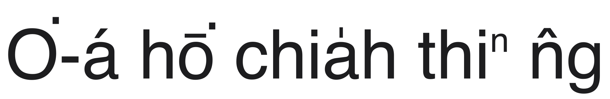
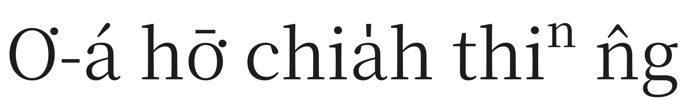

台語白話字（Pe̍h-ōe-jī，POJ）字型技術文件
在電腦、手機與網頁上正確顯示台語（Taigi）白話字（Pe̍h-ōe-jī，POJ）的完整技術手冊——同時記錄我們對整個 Google Fonts 開源字型庫的普查與上游貢獻計畫。
10 套熱門 Google Fonts 開源家族（Alata、Alatsi、Alice、Aboreto、Afacad、Amatic SC、Andada Pro、Alan Sans、Baskervville、Anta）現已具備原生台語白話字（POJ）完整支援。
一張圖看懂問題所在
以下五個範例是相同的五個台語詞彙：O͘-á、hō͘（雨）、chia̍h（食）、thiⁿ（天）與 n̂g（黃），經由 HarfBuzz（Chrome、Firefox、Android、LibreOffice 與 Linux 所使用的文字整形引擎）在五款不同字型中的真實渲染結果：
ccmp 預繪字形與 mark 錨點（方式 A + B）mark 表但缺乏 U+0358 錨點，導致 HarfBuzz 關閉備援定位，圓點掉到字母後方空白處
mark 表，HarfBuzz 備援計算把 U+0358 抬高到大寫 O͘ 整個筆畫外框之上
U+0358，直接顯示空白方框（豆腐字）
ccmp 預繪字形呈現，右點緊貼字母 o
以上圖示皆依據 HarfBuzz 實際定位與各字型真實輪廓繪製。macOS CoreText 在缺乏 OpenType mark 表的字型上表現可能不同，詳見跨平台差異。
三個根本原因，看懂 POJ 為什麼常破版
- Unicode 沒有預組好的 o͘ 與第八調字母。電腦是將 o͘ 存成 o 加上「右上圓點」組合附加符號（
U+0358），把 a̍ 存成 a 加上「上方短豎線」（U+030D）。再加上鼻化上標 ⁿ（U+207F），多數歐文字型根本沒有這些字元。深入了解 Unicode 編碼 → - 只補上字碼還不夠。字型必須知道如何把
U+0358精準定位到每一個帶調的 o 右上方（包含預組的 ó ò ô ō ŏ 與大寫）、在U+030D下方把 i 換成無點 ı，而且所有組字規則都必須寫在必定啟用的ccmp（絕不能放在可關閉的liga）。字型實作方式 → - 同一個字面上的音節，背後可能有好幾種 Unicode 編碼順序。NFC（
ó + U+0358）、NFD（o + U+0301 + U+0358）以及非正規順序（o + U+0358 + U+0301），在 HarfBuzz、CoreText 與 DirectWrite 上都必須呈現完全一致的外觀。標準組合類別與順序 →
快速解答
| 我想做的事… | 建議做法 |
|---|---|
| 書寫純白話字（POJ）文章 | 推薦使用 Lesson One、POJ Chhiu-ki、SIL Charis / Doulos / Gentium，或從 GitHub 下載的 TASA Explorer / Orbiter。查看完整推薦 → |
| 書寫漢羅混合文章（漢羅） | 推薦使用 jf open 粉圓（Huninn）、芫荽 Iansui 或 WD-XL 滑油字（皆採方式 A + B）；源樣明體（GenYo Min）與一點明體（I.Ming）亦可良好顯示。比較清單 → |
| 在漢字上方加註白話字注音（Ruby） | 純文字環境可使用 ButTaiwan 的字咍 taigivs IVS 字型（cmap format 14），網頁環境建議使用 HTML <ruby>。IVS 說明 → |
| 在網站上載入 POJ 字型 | 請自行託管完整字型檔（或子集化時完整保留所有 POJ 字碼與 ccmp/mark/mkmk）。Google Fonts 的 unicode-range 切塊會將 TASA Explorer 與 Source Sans 3 的 POJ 調號直接刪掉。查看實測結果 → |
| 快速檢測任何字型是否支援 POJ | 使用本站的即時 POJ 測試台，複製 NFC、NFD 與反向順序字串，並測試開啟 letter-spacing。 |
| 排除破版、亂碼或搜尋不到的問題 | 請查閱疑難排解與跨平台差異。 |
| 為字型加入 POJ 支援 | 請遵循字型開發者實作指南中的字形、錨點、AFDKO/feaLib 程式碼範本與目視驗收清單。 |
| 查詢 Google Fonts 普查與 989 個 Fork | 在Google Fonts 普查與 Fork 直接搜尋全部 1,471 款候選家族與 989 個上游專案。 |
文件章節總覽
1. Unicode 與編碼結構
完整 POJ 字碼清單、Unicode 17.0 預組字表、ccc 230 與 232 排序機制、三大整形引擎、Soft_Dotted i/j、NFKC 破壞 ⁿ 的風險、舊式 PUA 編碼、IVS 注音與雙連字號。
2. 字型如何實作 POJ
詳解四種實作技術（GPOS 錨點、ccmp 預繪連字、SIL 佔位圓點、固定疊印／引擎備援）、GDEF 類別、liga/case 隱藏開關，以及 Google Fonts unicode-range 切塊實測。
3. 24 款字型實測與樣張
精選開源字型推薦、即時 POJ 測試台與編碼檢視器、24 款字型完整對照表、HarfBuzz 互動檢驗器、未測試名單，以及高解析度 NFC vs NFD PNG 樣張。
4. Google Fonts 普查與 Fork
2,067 款家族授權分析、1,471 款互動篩選清單、55 款已有字元名單、989 個 GitHub Fork 目錄、上游 PR 工作流程，以及 Google Fonts 標準推動進度。
5. 疑難排解與跨平台差異
11 種常見故障症狀診斷（豆腐字、浮動圓點、單字補字、i̍ 殘留點、字距破版、NFKC 遺失鼻化、PDF 複製亂碼）與 HarfBuzz / macOS CoreText / Windows DirectWrite 比較。
6. 字型開發者實作指南
完整工程配方：字形與 cmap、錨點配置、可直接複製的 AFDKO/feaLib 功能碼範本、8 條 OpenType 規則、垂直度量、CFF 與 TrueType 差異、可變字型與目視檢查。